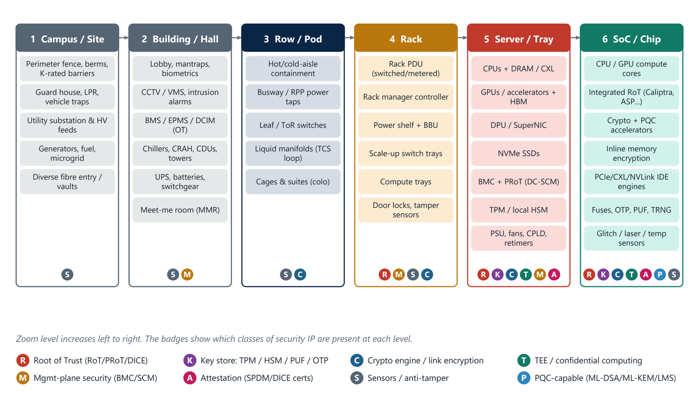

Chapter 1: Dissecting the Data Centre¶
A data centre is a purpose-built facility that provides conditioned power, cooling, connectivity and physical protection for IT equipment, plus the IT equipment and control software itself. This chapter takes it apart in six zoom levels, from the campus fence to the transistor, and shows that every level has its own controllers, firmware and attack surface. The central idea is that each step inwards trades physical controls for cryptographic ones.
1.1 A stack of nested systems¶
A data centre is best understood as a stack of nested systems, each with its own controllers, firmware and attack surface. Figure 1.1 zooms from the campus to the silicon. At the outermost level the protections are fences, barriers and guards. At the innermost level they are fuses, keys and sensors on the chip. Between the two, the badges show which classes of security IP are present: a campus has only sensors and anti-tamper measures, a building adds management-plane security, and by the time you reach the server and the chip, roots of trust, key stores, crypto engines, trusted execution and attestation are all present.

The six levels are the campus or site; the building or hall; the row or pod; the rack; the server or tray; and the SoC or chip. The reading of the figure is simple: security that depends on someone standing at a door is replaced, level by level, by security that depends on a key inside a chip.
1.2 Facility subsystems¶
Facility systems, sometimes called "grey space", are rarely thought of as security IP, yet every one of them is now a networked, firmware-driven device. A compromised UPS, chiller plant or coolant distribution unit can take an AI hall offline faster than any software exploit. The table summarises the main subsystems and what exposes them.
| Subsystem | Key components | Security exposure and controls |
|---|---|---|
| Utility and on-site power | HV substation, MV switchgear, transformers, ATS and STS, generators, fuel, battery storage, microgrid controllers, emerging 800 VDC distribution | IEC 61850, Modbus and DNP3 protocols, protection relays, EPMS. Controls: IEC 62443 zones, signed relay firmware, OT monitoring |
| UPS and distribution | Static UPS, Li-ion battery cabinets, busway, RPPs, rack PDUs, power shelves | Network management cards (SNMP, Redfish, web UI). Examples of hardening: certification to UL 2900-1 and IEC 62443-4-2, secure boot in the management card |
| Cooling | Chillers, cooling towers, CRAH and CRAC units, rear-door heat exchangers, CDUs, direct-to-chip cold plates, immersion tanks | CDU and leak-detection controllers on BACnet, Modbus or Redfish. Tampering causes thermal runaway. Controls: signed firmware, segmentation |
| Building management | BMS and BAS, EPMS, DCIM, fire detection and suppression, environmental sensors | The classic OT and IT bridge. Controls: remote-access hardening, MFA, protocol-aware firewalls |
| Physical security | Perimeter barriers, access control, biometrics, mantraps, CCTV and video management, intrusion detection, guard tours | Cameras and controllers are IoT endpoints. Controls: secure elements in the device, and sourcing restrictions such as NDAA Section 889 |
| Connectivity | Meet-me rooms, carrier cages, dark fibre, DWDM and 400ZR and 800ZR optics for data centre interconnect | Layer-1 encryption (AES-256) on interconnect, MACsec, fibre-path diversity and tamper monitoring |
Each of these domains has well-known suppliers (power and cooling from firms such as Schneider Electric, Vertiv, Eaton and Siemens; access control and video from firms such as HID, Genetec and Axis), and the Master Vendor Index at the end of the book lists them with the security function each contributes.
1.3 IT subsystems: the white space¶
The IT equipment lives in the "white space" and has four parts. Compute includes general-purpose servers (x86 from Intel and AMD, and Arm designs such as AWS Graviton, Google Axion, Microsoft Cobalt, NVIDIA Grace and Vera, and Ampere) and accelerated servers (NVIDIA HGX, DGX and NVL72 racks, AMD Instinct, Google TPU, AWS Trainium, Intel Gaudi, Microsoft Maia and Meta MTIA). Storage includes NVMe flash tiers, parallel file systems, object stores and hard-disk archive tiers. Network includes front-end Ethernet, back-end AI fabrics (InfiniBand, Spectrum-X, Ultra Ethernet), scale-up fabrics (NVLink, UALink, AMD Infinity Fabric) and DPUs or SmartNICs. Management includes baseboard management controllers, rack managers, an out-of-band network, jump hosts, privileged-access management, orchestration software (Kubernetes, Slurm, OpenStack), and the identity, key-management and logging services that run the fleet.
1.4 The three control planes¶
Every data centre runs three logically separate control planes, and attackers look for the seams between them.
| Plane | What it controls | Typical protocols | Primary security IP |
|---|---|---|---|
| In-band (tenant and data) | Workloads, VMs, containers, storage I/O | TCP/IP, RDMA, NVMe-oF, TLS | CPU and GPU TEEs, link encryption, DPUs |
| Out-of-band (platform) | Power on and off, firmware update, console, sensors | Redfish, IPMI (legacy), PLDM and MCTP, SPDM, NC-SI | BMC secure boot, platform RoT, TPM, DC-SCM |
| Facility OT | Power, cooling, fire, physical access | BACnet, Modbus, IEC 61850, OPC UA, SNMP | Hardened network management cards, OT firewalls, secure elements in cameras and controllers |
The out-of-band plane deserves special attention. The BMC that sits on it can switch the machine on and off, reflash its firmware and read its console, so it is the most privileged and most attacked component in the server. Much of the rest of the book is about how to protect it.
1.5 Summary¶
- A data centre is a stack of nested systems from campus to chip, and each level has its own controllers, firmware and attack surface.
- Each step inwards trades physical controls for cryptographic ones: fences and guards at the site, keys and fuses in the chip.
- Facility systems (power, UPS, cooling, building management, physical security, connectivity) are networked, firmware-driven devices and part of the security surface.
- The white space has compute, storage, network and management parts; the three control planes are in-band, out-of-band and facility OT, and attackers look for the seams between them.
1.6 Exercises¶
-
Name the six zoom levels of Figure 1.1 in order, and say which classes of security IP appear at the campus level.
Answer
Campus or site; building or hall; row or pod; rack; server or tray; SoC or chip. At the campus level only sensors and anti-tamper measures (badge S) appear.
-
Why can a compromised cooling distribution unit be as damaging as a software exploit?
Answer
CDU and leak-detection controllers are networked devices on protocols such as BACnet, Modbus or Redfish. Tampering with them can cause thermal runaway, taking an AI hall offline faster than a software attack could.
-
List the three control planes and give one protocol and one security IP block for each.
Answer
In-band: for example TLS or RDMA, protected by CPU and GPU TEEs and link encryption. Out-of-band: for example Redfish or SPDM, protected by the BMC secure boot, platform RoT or TPM. Facility OT: for example BACnet or Modbus, protected by hardened network management cards or OT firewalls.
-
Why is the BMC called the most privileged and most attacked component in the server?
Answer
It sits on the out-of-band plane and can power the machine on and off, update firmware and read the console, independent of the host operating system. Compromising it therefore gives control below the level that host security software can see.